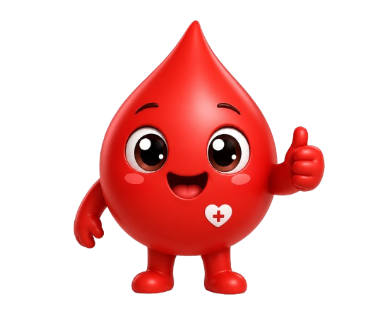

Um pequeno gesto
pode salvar
muitas vidas.
A doação de sangue é segura, rápida e faz toda a diferença para quem mais precisa.

Sua doação
salva vidas
Com uma única doação, é possível salvar até 4 vidas.
É rápido
e seguro
Todo o processo leva cerca de 40 minutos e é feito com materiais descartáveis.
Um ato de
solidariedade
Seu gesto pode transformar o dia de alguém e trazer esperança para muitas famílias.
Pode doar
quem ama
Seja um doador regular e incentive mais pessoas a fazerem o mesmo.